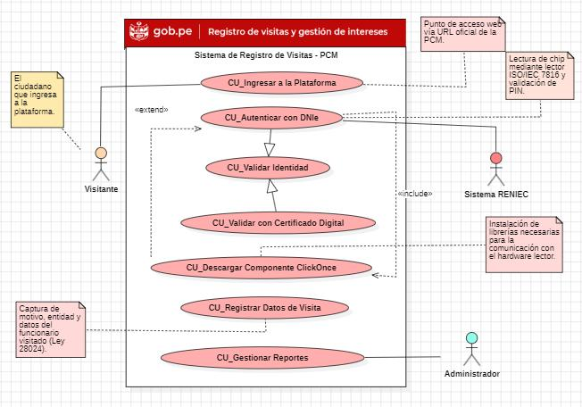

Modelado UML: Registro de Visitas
Modelado UML completo de un sistema de control de ingresos para una municipalidad, con autenticación mediante DNI electrónico y validación contra RENIEC, siguiendo los lineamientos de la PCM y la Ley N.º 28024 de Transparencia.
Sobre el proyecto
El ciudadano se autentica con su DNI electrónico (DNIe): un componente ClickOnce se comunica con el lector de hardware vía protocolo ISO/IEC 7816, valida el PIN y confirma la identidad contra RENIEC a través de la Plataforma de Interoperabilidad del Estado (PIDE). Una vez validado, el sistema registra el motivo de la visita y el funcionario visitado, controla el ciclo completo del ingreso hasta el registro de salida, y genera reportes de transparencia según lo exige la Ley N.º 28024.
Tecnologías
StarUML
Scrum
 PostgreSQL
Power BI
PostgreSQL
Power BI
Diagramas UML elaborados
- Casos de uso: interacción del visitante, RENIEC y el administrador con el sistema.
- Requisitos: mapeo de requerimientos funcionales y no funcionales (integridad, seguridad, trazabilidad).
- Actividades: flujo de validación de DNI y registro de ingreso.
- Secuencia: autenticación con DNIe entre interfaz, componente ClickOnce y RENIEC.
- Estados: ciclo de vida de una visita (validando, registrada, en curso, finalizada, denegada).
- Clases: modelo de dominio (Ciudadano, RegistroVisita, ServidorPúblico, ServicioAutenticación).
- Modelo de datos: esquema relacional (usuario_sistema, ciudadano, visita, funcionario).
- Componentes y despliegue: integración entre interfaz web, backend, lector de hardware y RENIEC.
- Dashboard Power BI: reporte de visitas por área y motivo.